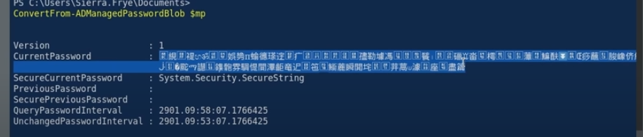

$gmsa = Get-ADServiceAccount <svc account> -Properties 'msDS-ManagedPassword'
$mp = $gmsa.'msDS-ManagedPassword'
ConvertFrom-ADManagedPasswordBlob $mp

get secure string password
$pw = (ConvertFrom-ADManagedPasswordBlob $mp).SecureCurrentPassword
look at [Powershell] > [Login with another user in AD]